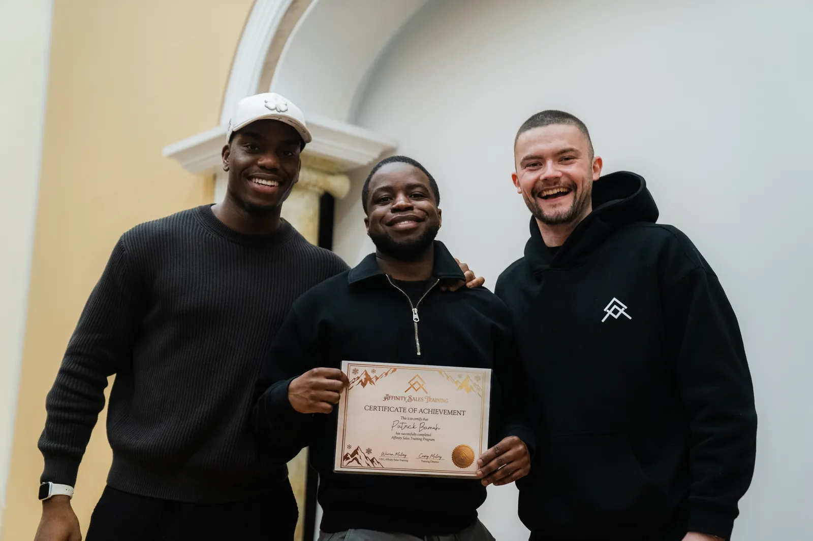

Modules & resources
Students complete structured campus lessons, homework and resource work before each checkpoint.

How it works
Students do not just get access to resources. They move through a 12-stage training journey with modules, live cohort calls, personal tutor support, student support, AI roleplay, practical assessments and credits that build toward graduation and Placement Clearance.

The journey
Each stage has a clear learning focus, a live support rhythm and a practical checkpoint. Students progress by proving competence, not by passively watching content.
Access the campus, join the right channels, meet the expectations and understand how credits, calls and assessments work.
Build the behaviour, routine, confidence and coachability needed before the technical training gets heavier.
Understand sales roles, digital work, offer types, buyer journeys and the standards expected in remote commercial teams.
Learn why people buy, how trust is built and how to sell without pressure, manipulation or robotic scripts.
Practise clean questioning, listening, tonality and qualification so students can diagnose before they pitch.
Submit discovery practice, receive tutor feedback and pass the first meaningful practical checkpoint.
Learn how to transition, explain value, structure the offer and guide a conversation to a professional next step.
Handle resistance calmly, identify the real concern and respond with structure instead of pressure.
Use mock calls, AI/Krios simulations and call reviews to build confidence before speaking to real buyers.
Review modules, mocks, AI roleplay, submissions and tutor notes before moving into career-readiness work.
Build the assets needed for the market: CV/profile, Loom or intro video, application habits and interview practice.
Complete the final assessment, receive a graduate decision and move into the placement plan if cleared.
Access the campus, join the right channels, meet the expectations and understand how credits, calls and assessments work.
Build the behaviour, routine, curiosity and coachability needed before the technical training gets heavier.
Understand what AI is, how models learn, where they fail and the landscape of tools shaping modern work.
Learn to write clear, structured prompts, control outputs and iterate toward reliable, useful results.
Practise structuring, cleaning and feeding data to models so outputs are grounded instead of guessed.
Submit prompt-work, receive tutor feedback and pass the first meaningful practical checkpoint.
Learn how to chain models, tools and APIs to automate real tasks and remove repetitive work.
Handle hallucinations, bias, privacy and the standards expected when deploying AI in a real business.
Use AI/Krios simulations and project reviews to build confidence before applying AI on real work.
Review modules, projects, AI roleplay, submissions and tutor notes before moving into career-readiness work.
Build the assets needed for the market: CV/profile, Loom or intro video, application habits and interview practice.
Complete the final assessment, receive a graduate decision and move into the placement plan if cleared.
The support layer
Affinity is a supported training environment, not a folder of videos you learn from. Every stage is wrapped in live coaching, tutor oversight and the structure that keeps students moving.
Students complete structured campus lessons, homework and resource work before each checkpoint.
Each cohort has a live training rhythm for teaching, Q&A, call breakdowns, roleplay and accountability.
A named coach guides progress, reviews blockers, gives feedback and decides whether standards are being met.
Students have support around access, attendance, deadlines, submissions and staying on track through the pathway.
AI/Krios practice gives students safe repetitions, realistic scenarios and feedback before real calls or interviews.
Credits build as students pass stage requirements, submit evidence and clear coach-reviewed practical gates.
The credit system
Each stage contributes toward graduation credits. Credits are not just for watching lessons: they come from completed modules, practical assessments, AI/Krios roleplay, mock-call submissions, CV/interview assets and coach-approved readiness gates.

prepares students for the checkpoint.
prove they can apply the skill.
protects the graduation standard.
show how close they are to graduation & placement readiness.
Capability focus
This should read as curriculum, not a motivational list. These are the employable behaviours students train, practise and evidence.
Clear speech, active listening, tonality, follow-up and the ability to guide a professional conversation without sounding scripted.
Asking better questions, identifying fit, understanding pain, budget, urgency and decision-making before trying to pitch.
Understanding trust, emotion, resistance, motivation and the reasons people move from interest to decision.
Explaining value, structuring the offer, recognising buying questions and agreeing the right next action professionally.
Staying calm under pressure, separating real concerns from surface objections and responding without becoming pushy.
Attendance, preparation, deadlines, coachability, daily output and the ability to be trusted by a company without constant supervision.
Placement pathway
Graduation should lead into a clear market-readiness pathway, not a dead end.
Students package their training, strengths, experience and readiness into a clean CV/profile.
Students practise presenting themselves, answering questions and explaining why they are ready.
Coach and support teams check the graduate has met the standard before introductions happen.
Cleared graduates get help applying, tracking opportunities, preparing for interviews and moving toward real roles.
Admissions open
Get your free brochure for the next Virtual Open Day. A walk-through of the programmes, the curriculum, and where six focused months could take you.